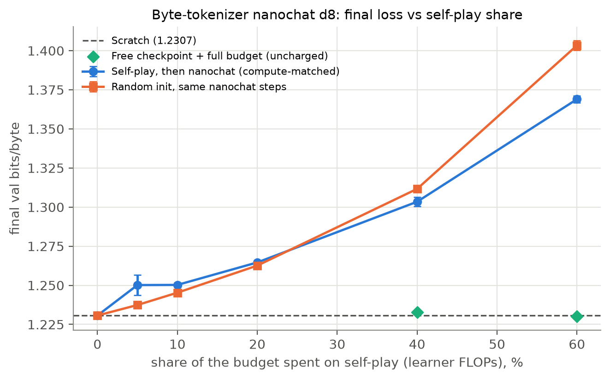
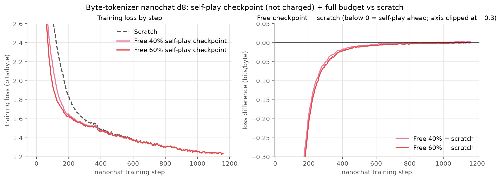
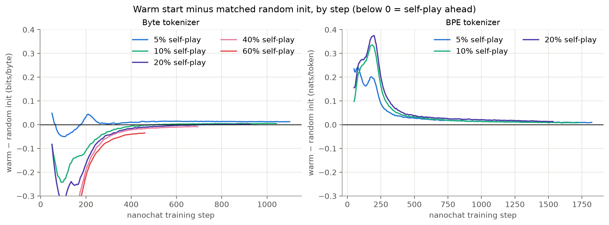
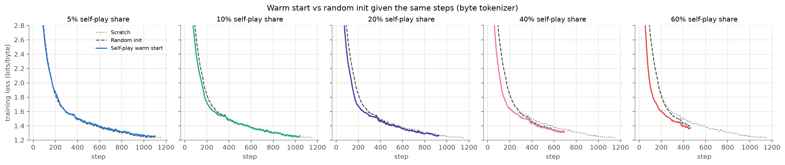
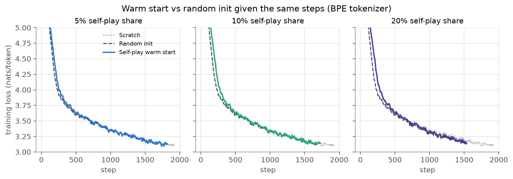

Self-play pretraining (arXiv:2609.30063) · 1M byte model on Shakespeare · nanochat d8 on ClimbMix · 1× H200
Does a synthetic warm-up help at equal compute?
Each arm spends one fixed FLOP budget. A share of it goes to a warm-up on synthetic data (self-play on a Brainf*ck or stack machine, the paper's random PCFGs, or hand-designed generators for nested brackets, copying and word-like text), and the rest goes to ordinary next-byte training on Shakespeare. Scratch spends all of it on Shakespeare.
Final loss vs. warm-up share, 1e14 FLOPs
The paper's methods: self-play on a Brainf*ck or stack machine, and random PCFGs.Hand-designed warm-ups from synth.py. Word-like text builds in priors about text on purpose.
Validation bits per byte on the full Shakespeare val split after the whole budget (lower is better). Each point is the mean of 3 seeds at the better of two nanoGPT learning rates (1e-3, 3e-3); bars show ±1 std. The dashed line is scratch. Both panels share one y-scale. The x position is the share actually spent on the warm-up, which can overshoot the target by up to one self-play round.
Learning curves at a 10% warm-up
Validation bits per byte against total compute spent, including the warm-up, at 1e14 FLOPs. Warm-up arms start their Shakespeare curve late because the first part of their budget went to the warm-up.At 1e15 FLOPs (about 146 passes over Shakespeare) every arm overfits. Final loss improves with more warm-up only because less compute is left to overfit with. The best point on each curve (roughly what early stopping gives) is flat.
nanochat, the maintained successor to nanoGPT
karpathy/nanochat's own d8 recipe, unchanged: its GPT (rotary, QK-norm, ReLU², value embeddings, sliding windows), Muon optimizer, BPE tokenizer and ClimbMix web data, 1,920 steps and 1.49×10¹⁷ FLOPs. Self-play runs on the same model, fed single-byte tokens. Each control trains from random init for exactly the steps its warm arm gets after self-play, so the only difference between them is the starting weights.
Final val bits/byte on nanochat's validation set, mean of 2 seeds, ±1 std. A self-play warm start is worse than scratch, and also worse than random init given the same number of nanochat steps.Out-of-distribution sets: warm start minus its matched random-init control (bits/byte; above zero means self-play hurt). Grey bars show the seed-to-seed spread of scratch on each set. Brainf*ck outputs are left out here (differences of +2.8 to +4.5 on a very noisy scale) and appear in the table.
nanochat with a byte tokenizer, self-play charged only its learner FLOPs
The same nanochat d8 recipe, with its BPE tokenizer replaced by the 256 raw bytes, so self-play and web-text training share one token space. Self-play is charged only the FLOPs of training the learner; its reward pass and program generator are free, as in the paper's accounting. The budget is nanochat’s own horizon for this model: 1,159 steps and 5.96×10¹⁶ FLOPs. Self-play gets about 240, 475, 945, 1,890 and 2,830 rounds at 5%, 10%, 20%, 40% and 60%. For 40% and 60%, a third arm reuses the same self-play checkpoint but trains nanochat for the full budget, with self-play not charged, which is how the paper frames it.
Self-play gives a real head start that fades. With enough rounds (40% and up), a self-play checkpoint trains better than random init over the same short schedule. At equal compute it still loses to scratch, and when self-play is free and nanochat trains for the full horizon, it only ties scratch (1.2301 and 1.2328 vs 1.2307).
Final val bits/byte, mean of 2 seeds, ±1 std. The gap between the warm start and random init given the same steps goes from 0.013 worse (5%) to 0.002 worse (20%), then to 0.008 better (40%) and 0.034 better (60%). The warm start is still far behind scratch, because self-play displaces most of the web-text training.The self-play checkpoint treated as free, trained for nanochat's full 1,159 steps, against scratch. It leads by about 0.07 bits/byte at step 250, the lead is gone by step 750, and the runs finish level.
Out-of-distribution sets: warm start minus its matched random-init control (below zero means self-play helped). Grey bars show the scratch seed-to-seed spread. Copying improves at every share, and at 60% everything improves, but that comparison is against a control trained for only 464 steps. After full training (free-checkpoint rows in the table) the advantage is gone: the free checkpoints are worse than scratch at copying (+0.03 to +0.06) and arithmetic (+0.16).
Step-by-step learning curves
nanochat logs its training loss at every step (a debiased running average). Web text is never repeated in these runs, so this loss tracks validation loss closely and shows every step instead of an eval every 250. Curves are the mean of 2 seeds, plotted every 5 steps. The x-axis is nanochat training steps, so self-play compute is not on it.
Byte tokenizer: self-play checkpoint given the full budget vs scratch
Training loss (bits/byte) for scratch and for the 40% and 60% self-play checkpoints trained for nanochat's full 1,159 steps (self-play not charged). The y-axis is zoomed to the part of training where the curves separate.
Free checkpoint minus scratch, by step. Below zero means the self-play checkpoint is ahead. The lead is largest early (about 0.7 bits/byte at step 100, beyond the clipped axis), shrinks steadily, and is gone before the end.Warm start minus its matched random-init control, by step, for each self-play share (compute-matched arms). Below zero means the self-play starting point is ahead at that step. The y-axis is clipped at −0.3 so the late-training differences stay readable.
Byte tokenizer: warm start vs random init, one panel per share
BPE tokenizer (first nanochat run)
Loss here is nats per BPE token (nanochat's training loss), so it isn't on the same scale as the byte-level panels. Controls are scratch runs shortened to the warm arm's step count.
Warm start minus matched random-init control, by step (nats/token). The BPE warm start is behind at every step and every share: self-play there only trains single-byte tokens, so the model starts out miscalibrated for real BPE text.
Static figures
The same results as publication-style PNGs (200 dpi), rendered with matplotlib by report/make_figs.py. The files are in report/figs/ in the repo.

Byte tokenizer: final loss against self-play share. Self-play overtakes random init given the same steps between 20% and 40%, but both stay far above scratch. Free checkpoints (green) land on the scratch line.

Free self-play checkpoint (not charged) plus the full budget vs scratch. A large early head start fades to nothing by the end of training.

Warm start minus matched random init, by step. With byte tokens self-play starts ahead; with BPE tokens it starts behind. Either way the difference decays toward zero.

Byte tokenizer, one panel per share: self-play warm start vs random init vs scratch.

BPE tokenizer, one panel per share: the warm start trails random init early in every panel.